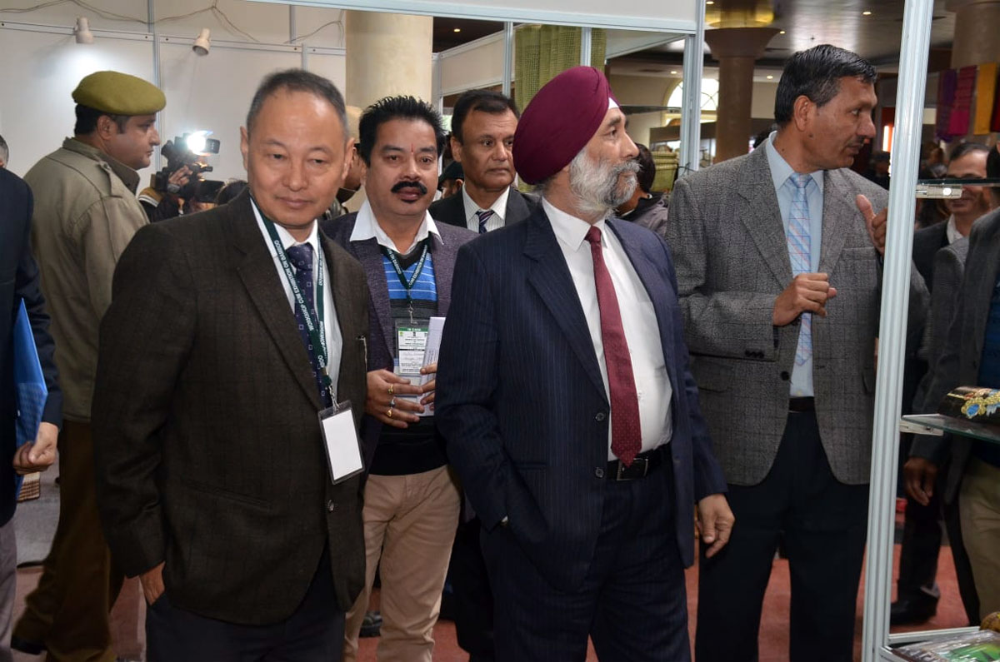

The deliberations of the two-day workshop-cum-exhibition on Bamboo with the aim of creating opportunities for the sustainable development in Jammu and Kashmir concluded today at Jammu. The workshop-cum-exhibition was organized by the Ministry of Development of North Eastern Region, North Eastern Council, Govt. of India and Govt. of Jammu and Kashmir through Cane and Bamboo Technology Center (CBTC), Guwahati, Assam and the Department of Social Forestry, Govt. of Jammu and Kashmir.
During the valedictory session held today, Shri. C.H. Kharshing, Planning Advisor, North Eastern Council, Govt. of India put forth various recommendations for the growth of Bamboo industry in Jammu and Kashmir on the pattern of North Eastern Region. The recommendations are:
1. Identify and increase the coverage of appropriate species of bamboo in Jammu and Kashmir through tissue culture research and establish nursuries and distribute endlings.
2. Formation and promotion of bamboo-related farmers and organisations and bamboo clusters throughout the bamboo producing areas of J&K with the involvement of PRIs.
3. Capacity building of J&K farmers/artisans and bamboo enterpreneurs at CBTC Assam.
4. Technical collaboration of CBTC with the J&K Government for setting up of Common Facility Centers and Bamboo Technology Parks.
5. Promotion of the use of bamboo as construction material for eco-tourism, rural housing and community buildings in rural areas.
6. Partnership between NEHHDC and J&K Government to assist the J&K artisans for the promotion and marketing of bamboo products and handicrafts.

Speaking during the technical session, Shri Dhan Chaudhary, a young enterpreneur from North East said that the size of the Agarbatti market in India is about 6000 crore and is growing at a rate of 10 percent per annum which has immense scope for the livelihood development in the rural areas. There are about 12000 Agarbatti manufacturing units in India and over 33 lakh people are directly or indirectly employed by this industry, he added. He further said that Jammu and Kashmir has also a good scope in Agarbati manufacturing as there are good reserves of Bamboo in different areas of Jammu which can generate good employment avenues for the people.
Shri Dhiraj Thakuria, Managing Director, North East Handloom and Handicrafts Development Corporation, Ministry of DoNER, Govt. of India speaking on the technical session on ‘Cane and Bamboo Handicraft’ said that the Ministry of Development of North Eastern Region has launched a program known as Science and Technology intervention in North Eastern Region (STINER) for the development of user friendly technology using IITs, ICAR etc and for the promotion of the Handicraft and Handloom sectors in North Eastern Region.
Complementing DoNER for many of its great steps taken, he said that for the promotion of livelihood status and income generation, DoNER has started agencies like North Eastern Region Livelihood Project (NERLP) and North Eastern Region Community Resource and Management Program (NERCORMP) for the welfare of the people of North East.
Shri Sanjay Ganjoo, CEO Bhaskar Foundation and Director General, Indian Federation of Green Energy said that Jammu and Kashmir has also a great scope in Bamboo industry especially in Eco tourism, Handicrafts, Agarbatti stick clusters, Tissue culture labs etc.
Shri Rabin Bose, Vice President Mutha Industries, Agartala, in another technical session on ‘Bamboo Wood Making and its products’ questioned why cannot we utilise bamboo to make our economy grow much faster. He also complemented the Prime Minister, Shri Narendra Modi for his serious concerns towards Bamboo industry, who wants it grow for being Eco friendly and promoting livelihood.
The two-day Bamboo workshop-cum-exhibiton was inaugurated yesterday by the Union Minister of State, PMO, Personnel, Public Grievances and Pensions, Dr Jitendra Singh in presence of the Lt. Governor, Jammu and Kashmir, Shri G.C Murmu.
During the two-day workshop-cum-exhibition, various technical sessions were held on Bamboo Wood Making and its Products, Cane and Bamboo Handicraft experience of North Eastern region, Status and Scope of Bamboo Stick industry with special reference to Agarbatti making and Potential and Uses of Bamboo in Housing and Construction.The participants had a threadbare discussion on the topics they spoke about. They elaborated the contents of their presentations with respect to the relevant topics on Bamboo cultivation and its scope in the Union Territory of Jammu and Kashmir.
As a part of the workshop, several interactive sessions were held in every module to provide participants an opportunity to attain better understanding of various topics covered in the workshop-cum-exhibition.
The artists also performed a live programme for the Bamboo promotion in the Union Territory of Jammu and Kashmir.
Pertinently, the workshop-cum-exhibition was held with an aim to promote Bamboo cultivation which will ensure greater opportunities for the sustainable development in the Union Territory of Jammu and Kashmir.
PIB / https://pib.gov.in/newsite/PrintRelease.aspx?relid=197388
Govt to hold bamboo exhibition in Jammu to replicate NE model
Press Trust of India |

- Log in to post comments
- Email this page